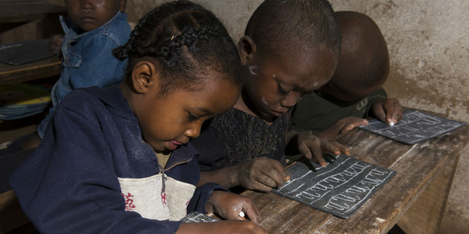
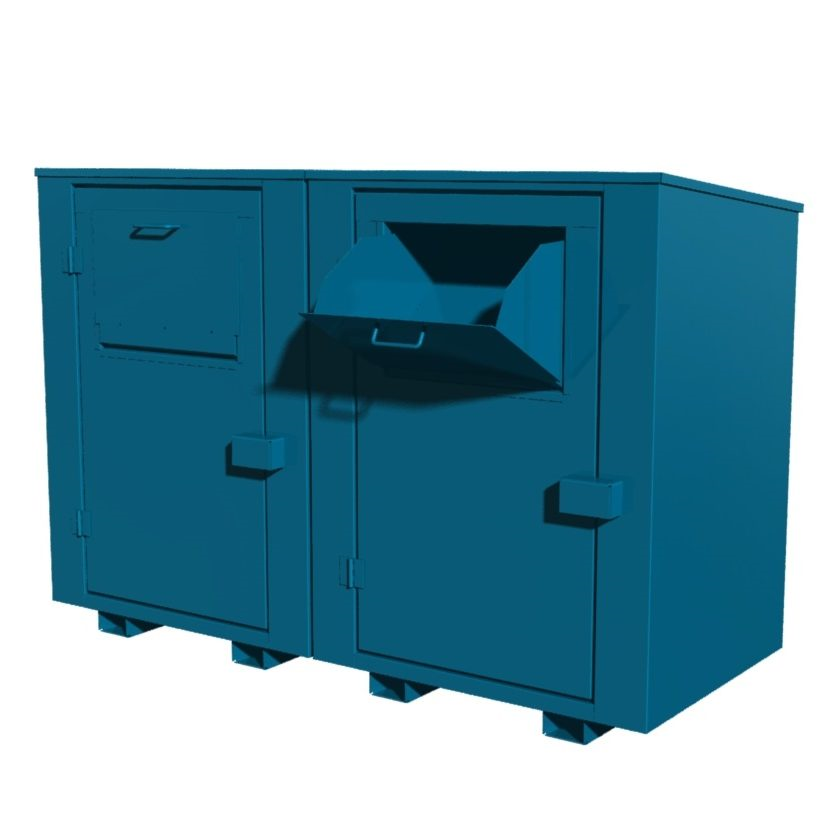

Why is the problem important?
In most developing countries for instance South - Sudan the schools and the students do not have the means to afford school supplies such as notebook, back packs and pens.
Studying without school supplies makes it difficult for students to learn and many students do not attend class because of a bad learning experience.
This generally decreases the learning outcome and the motivation of the students and cases other social economic problems.

What is our solution?
Our solution is establish containers for the donation of school supplies that is managed by our organization.
At each of the drop off locations you will find a secured drop off boxes to donate your schools supplies. Every study semester we start a new campaign that focuses on a different region of Africa.

The container is marked with stickers explaining where the donated supplies will go and how they will be used.
On the sticker you find information describing the problems of the selected country what their current educational system looks like and how the donated schools supplies
will help the students in the region.
Once the donation period is over or our integrade container manegment system detects that the container is full
a team of volunteers picks up the supplies and delver them to the sorting center.
At the center we access and sort the delivered supplies according to type, age group and usability.
The supplies that are too damaged will be recycled according to the local regulations.
Notebooks, backpacks, rulers and other supplies are thoroughly accessed for damage and functionality.
After the supplies have been checked and packed to selected shipping boxes.
Funds
Donated books in Norwegian and other languages are sorted out and accesses for damage.
Books in good conditions are sold afterwards with the help of iBook and finn.no to raise funds for our operations.
Once we have secured funding that covers our organizational needs the rest of the donated books is donated back to Universities in Norway,
where disadvantaged students can receive free study books for personal use.
Transportation
The transportation is facilitated by an agreement with Unicef, united natios and the local authorities.
The supplies can be delivered directly to the government of the country for distribution,
or to humanitarian organizations on the ground such as the Read Cross.
What is our solution?
Our solution is to establish a network of dop off locations for donations of schools supplies such as:
- Bagpack
- Notebooks
- Pens
- Calculators
- Rulers